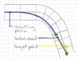

4.3 SteeringOverview In this section we will improve the steering with a heuristic approach. In a nutshell, the presented method still drives on the middle of the track, but now we will steer toward a point ahead of the car. The disadvantage of this simple method is that we can't drive with the biggest possible radius through turns like you can see easily on the sketch. This drawing doesn't match exactly with the method presented below, because the lookahead distance will be measured on the middle of the track. |
The Target PointFirst we discuss how to get the target point. We know the position of our car and the geometry of the track. So we follow the track middle lookahead meters, there is our target point. Put the following code into driver.cpp. v2d Driver::getTargetPoint()
{
tTrackSeg *seg = car->_trkPos.seg;
float lookahead = LOOKAHEAD_CONST + car->_speed_x*LOOKAHEAD_FACTOR;
We compute the lookahead distance with a heuristic. Like you can see lookahead grows with the speed. float length = getDistToSegEnd();
while (length < lookahead) {
seg = seg->next;
length += seg->length;
}
This loop finds the segment which contains the target point. length = lookahead - length + seg->length;
v2d s;
s.x = (seg->vertex[TR_SL].x + seg->vertex[TR_SR].x)/2.0;
s.y = (seg->vertex[TR_SL].y + seg->vertex[TR_SR].y)/2.0;
Now we compute the distance of the target point to the start of the segment found and the starting point itself. From that we are able to compute the target point in the global coordinate system. We have to distinguish between straights and turns. if ( seg->type == TR_STR) {
v2d d;
d.x = (seg->vertex[TR_EL].x - seg->vertex[TR_SL].x)/seg->length;
d.y = (seg->vertex[TR_EL].y - seg->vertex[TR_SL].y)/seg->length;
return s + d*length;
For the straight we compute the starting point on the middle of the track and the direction vector. From that we can get the final point and return it. } else {
v2d c;
c.x = seg->center.x;
c.y = seg->center.y;
float arc = length/seg->radius;
float arcsign = (seg->type == TR_RGT) ? -1 : 1;
arc = arc*arcsign;
return s.rotate(c, arc);
}
}
For the turns it's a bit different. First we get the rotation center of the segment. Next we compute from the length and the radius the angle of the target point relative to the segments starting point. Finally we rotate the starting point around the center with the computed angle. At the start of driver.cpp we need to define the constants. const float Driver::LOOKAHEAD_CONST = 17.0; /* [m] */ const float Driver::LOOKAHEAD_FACTOR = 0.33; /* [1/s] */ Heading Toward the Target PointNow we finally implement the getSteer() method, which computes the steerangle towards the target point. We need atan2() because atan() doesn't work well from -PI..PI (atan(-y/-x) == atan(y/x)). float Driver::getSteer()
{
float targetAngle;
v2d target = getTargetPoint();
targetAngle = atan2(target.y - car->_pos_Y, target.x - car->_pos_X);
targetAngle -= car->_yaw;
NORM_PI_PI(targetAngle);
return targetAngle / car->_steerLock;
}
Now you need to change Driver::drive() so that getSteer is called: replace float steerangle = angle - car->_trkPos.toMiddle/car->_trkPos.seg->width;
car->ctrl.steer = steerangle / car->_steerLock;
with car->ctrl.steer = getSteer(); Finishing ImplementationFinally we need some changes in driver.h. The new methods and constants needs to be defined, and we also need to include linalg.h. #include "linalg.h" float getSteer();
v2d getTargetPoint();
static const float LOOKAHEAD_CONST;
static const float LOOKAHEAD_FACTOR;
TestdriveDo some test runs with the different cars. The car drives now very nice on most of the tracks. Try also e-track-3 and have a look on the first left turn after the finish line. In the next chapter we will implement a heuristic to pass turns of that type faster. DownloadsIn case you got lost, you can download my robot for TORCS 1.2.0 or later. Summary
|
|
Back |
Let's get faster. |